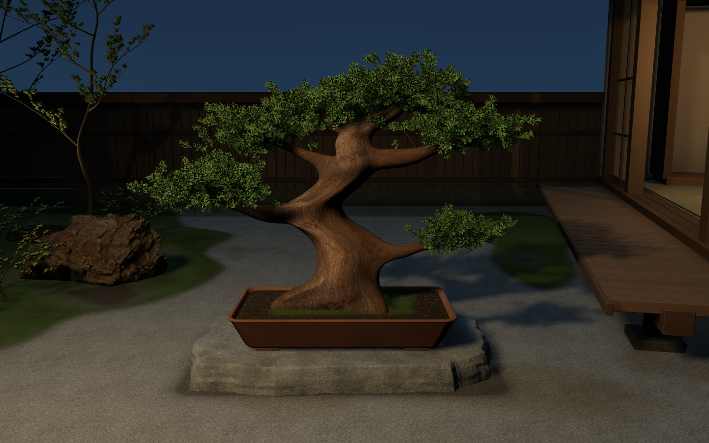
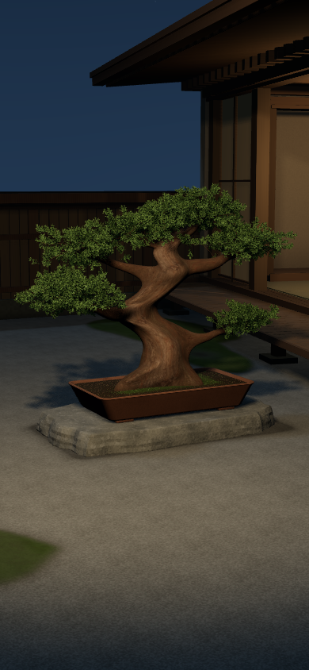
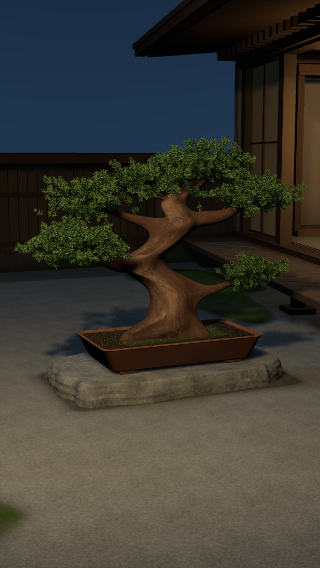
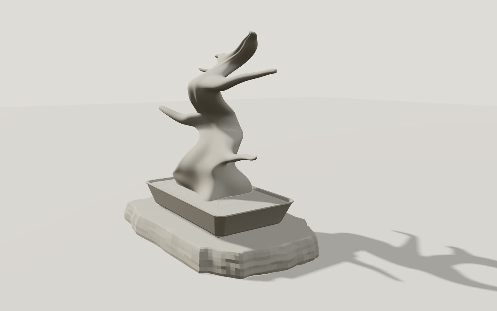
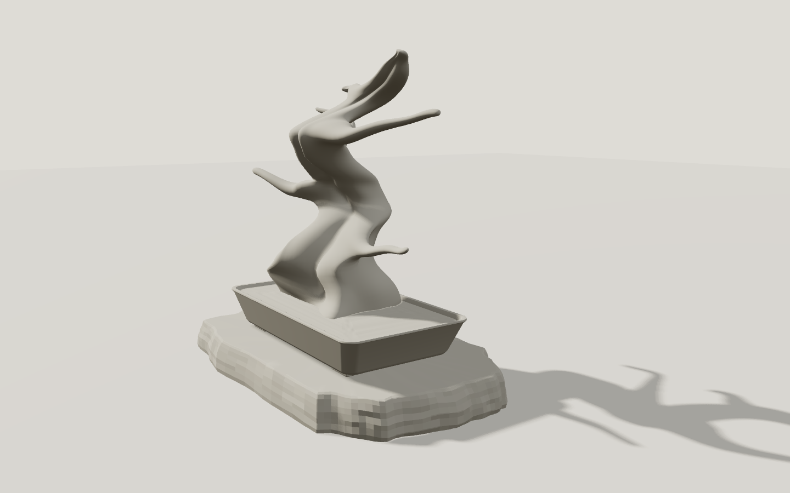
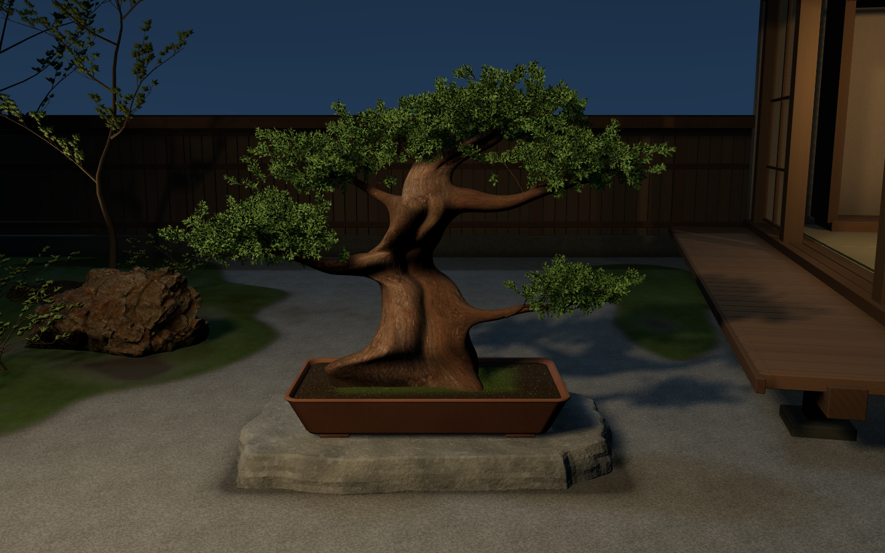
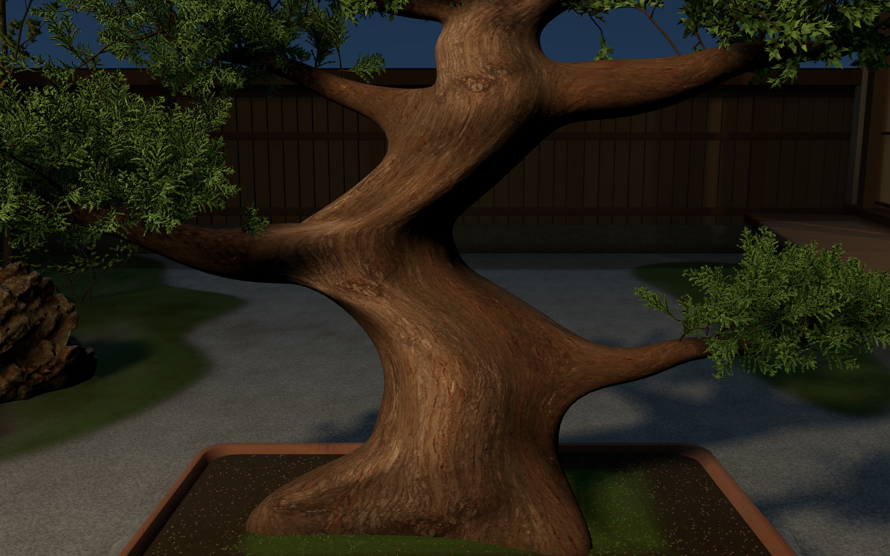
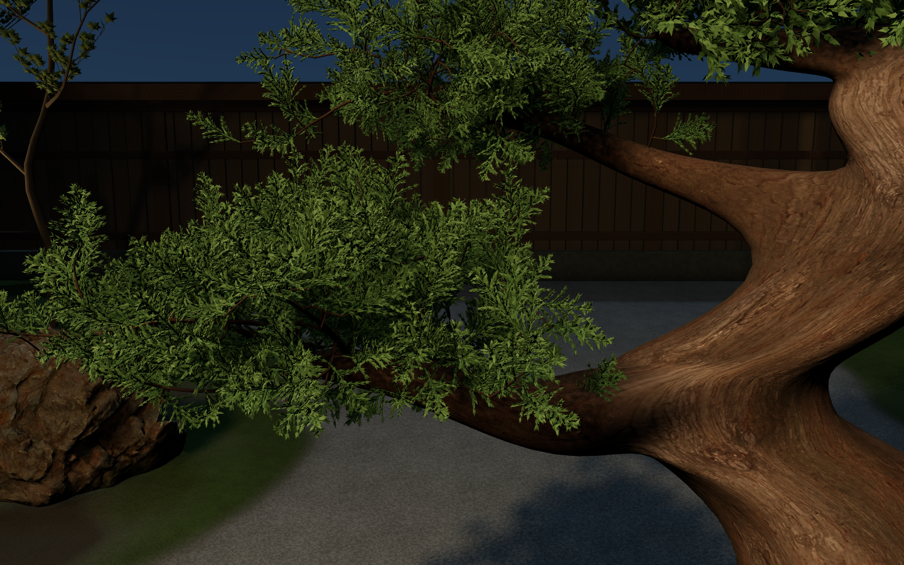
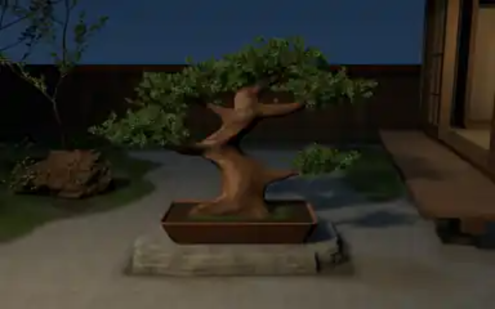

工程12：造形は非採用、読み込みと遠景葉の影のみ限定改善
このページは確認資料で、通常サイトのUIではありません。主幹・庭全体の高級感は未達。景色の変更量や検査成功を、美的完成としません。通常景色はMac内の5206、詳細はREPORT.md。
基準と今回の通常景色

工程11 / 保護形状・空間 工程12 / 同じ形状・空間、低LOD葉だけPCF8
工程12 / 同じ形状・空間、低LOD葉だけPCF8独立モバイル構図

390×844
320×568参考と未達
 生成された外観参考。完成した実装のスクリーンショットではない。
生成された外観参考。完成した実装のスクリーンショットではない。元の添付盆栽写真は302×404の実ピクセルを確認済み。主幹の厚い芯、非対称な分かれ、土へ戻る根元は、現在の滑らかなS字からさらに造形の再設計が必要。
非採用二案の単色・全景を見る

A：幅広い面のうねり、水平な靴先状の根
B：折り畳んだ帯状の谷と棚状の根A通常 / 非採用
B通常 / 非採用ロードと近接品質
分割だけのPC390320は基準画像とバイト一致。形状/textureの使用channelは削減せず、詳細葉491,629Bを近接時に取得する。低速では追加2.679秒。通常表示の初期画像は395〜459msの表示機会、鮮明な画像は677〜2077ms、3Dは19.095〜19.941秒。三つの時点を区別。

幹近接 / 元の保護形状と16サンプル影
詳細葉 / 同じ元geometry、16サンプル影
工程11の初期HTML画像 / 未加工実ブラウザ工程12の初期HTML画像 / 未加工実ブラウザ実Mac Chromeの最終p95 PC14.549ms / 39012.803ms。72+7検査成功。実スマホ・Safari・持続熱負荷・動作時のちらつきは未検証。Library再試行なし、画像IDなし。